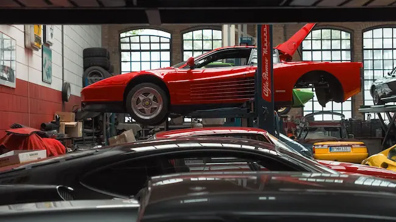

Follow service intervals
Keep track of time- and distance-based maintenance instead of waiting for a warning light.
DRIVE SMART. MAINTAIN REGULARLY.
Clear, practical maintenance guidance to help you understand routine checks, recognize common warning signs, and prepare for your next service.

START WITH THE BASICS
Routine maintenance supports safety, reliability, and the useful life of your vehicle. Always follow your vehicle manufacturer's handbook for exact specifications.
Keep track of time- and distance-based maintenance instead of waiting for a warning light.
Look at tyres, lights, visible leaks, and dashboard warnings before longer journeys.
Unusual noises, smells, vibration, or overheating should be checked promptly.
MAINTENANCE LIBRARY
Browse a growing set of maintenance topics. Open any item to read more, filter by category, and save useful items to your favourites on this device.
View all maintenance items →This website provides general educational information, not a substitute for your owner's manual or a qualified mechanic's inspection. Never work under a vehicle supported only by a jack. If a warning indicates an immediate safety risk, stop in a safe place and seek professional help.